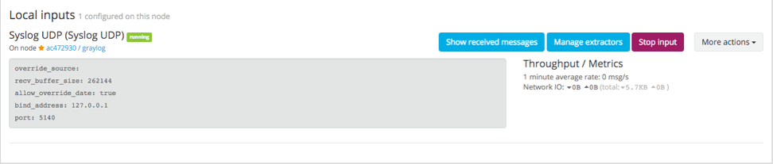
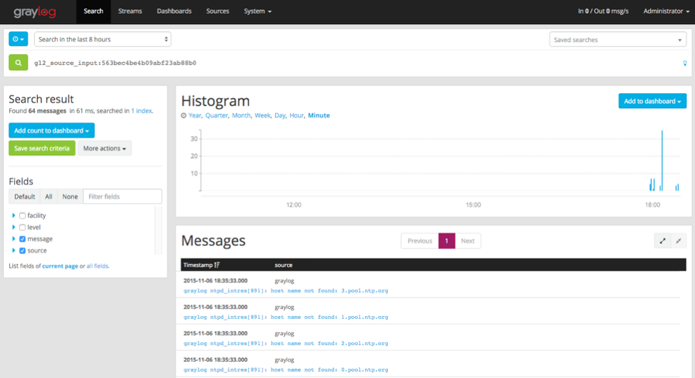

Check If You Have Messages¶
After that, you should see the Syslog UDP input appear on the screen.
Click Show received messages button on this screen, and you should see messages at the bottom. It may take a few minutes before you have messages coming in.
Now that you have messages coming in, this is where the fun starts.
Skip the next section if you are all good.
If You Don’t Have Messages¶
- Check to see that you made the proper entries in the rsyslog configuration file.
- Check the syslog UDP configuration and make sure that is right - remember we changed the default port to 5140.
3. Check to see if the server is listening on the host:
$sudo netstat -peanut | grep ":5140"
4. Check to see if rsyslog messages are being forwarded to the port. You can use the tcpdump command to do this:
$sudo tcpdump -i lo host 127.0.0.1 and udp port 5140